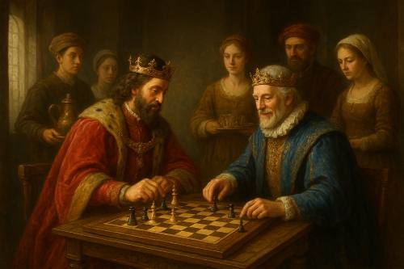

The Basics of Chess
Chess is a two-player strategy game played on an 8x8 board. Each player starts with sixteen pieces: one king, one queen, two rooks, two bishops, two knights, and eight pawns. The goal is to checkmate your opponent’s king — to trap it so it cannot move without being captured.
Every piece moves differently, and learning how to coordinate them together forms the heart of the game. Players must balance offense and defense, anticipate their opponent’s plans, and think several moves ahead. Although the rules are simple, mastering chess can take years of study and practice, which makes it both challenging and deeply rewarding for players of all skill levels.
A Brief History of Chess
Chess traces its roots back to India in the 6th century, where it was known as Chaturanga. It spread through Persia and the Islamic world before reaching Europe, where the modern rules began to take shape during the Renaissance period.
Over time, chess evolved into a global phenomenon that transcended language and culture. It became a symbol of intelligence, patience, and creative thinking. Famous historical figures — from kings and philosophers to scientists and generals — have all studied the game for its ability to teach discipline and foresight. Today, it remains one of the most respected and widely played games in the world.

How Chess Improves the Mind
Chess is more than a game — it’s mental exercise. It strengthens problem-solving skills, patience, and focus, and helps improve logical thinking. Many players also find it relaxing and rewarding.
By engaging both the creative and analytical sides of the brain, chess encourages deeper thinking and reflection. It teaches decision-making under pressure and helps players stay calm even in challenging situations. For students, chess has been shown to improve academic performance and critical thinking. For adults, it provides mental stimulation that keeps the mind sharp and active throughout life.
Key Benefits of Playing Chess
| Skill |
How It Helps |
| Concentration |
Helps focus on long-term goals and multiple outcomes. |
| Strategy |
Encourages forward thinking and planning ahead. |
| Memory |
Improves the ability to recall patterns and past experiences. |
Did You Know?
The word “checkmate” comes from the Persian phrase Shah Mat, meaning “the king is helpless.”